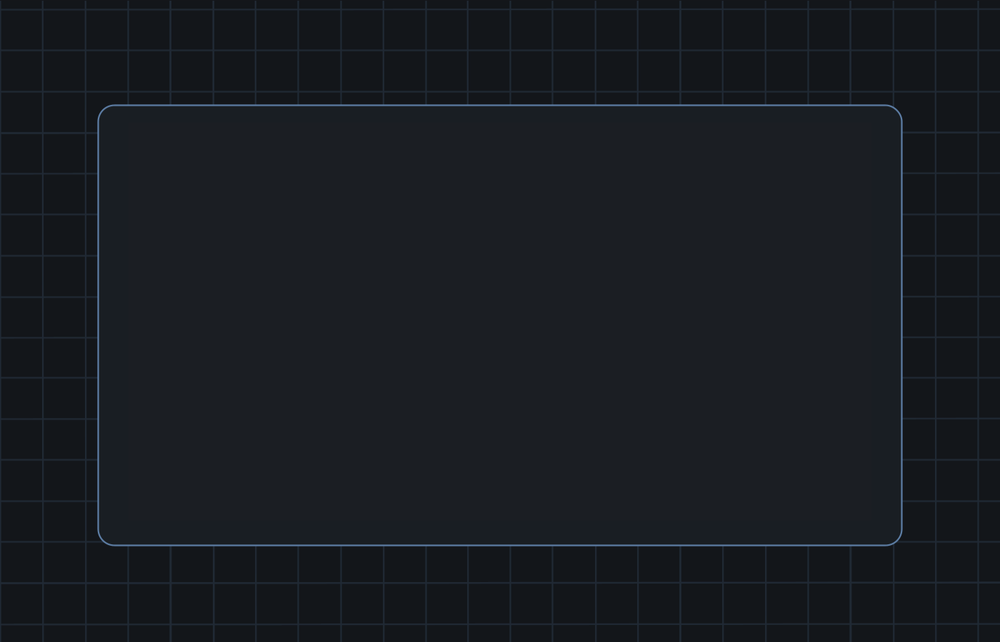
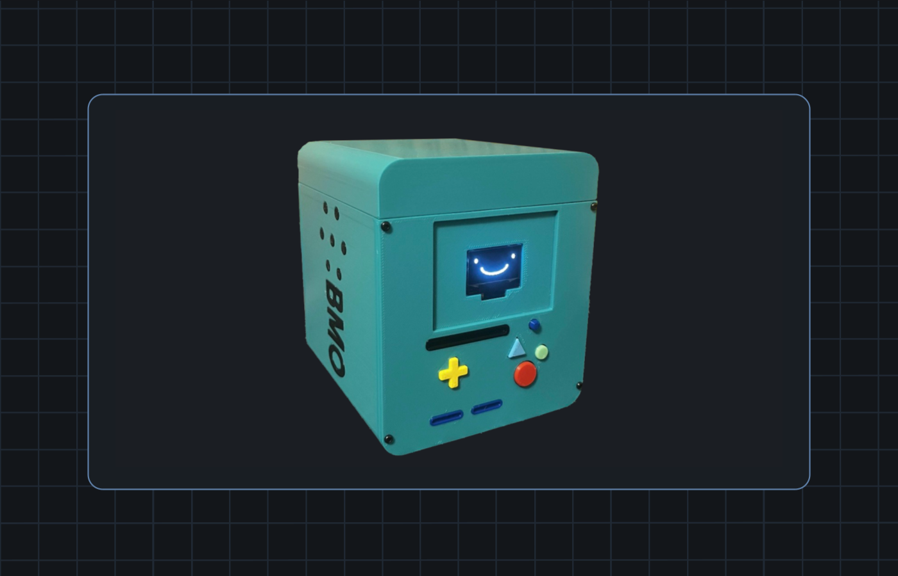
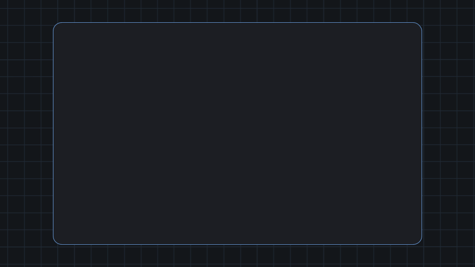
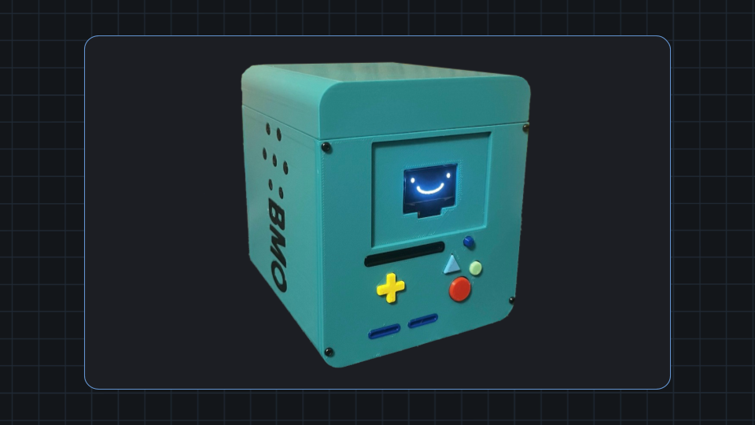
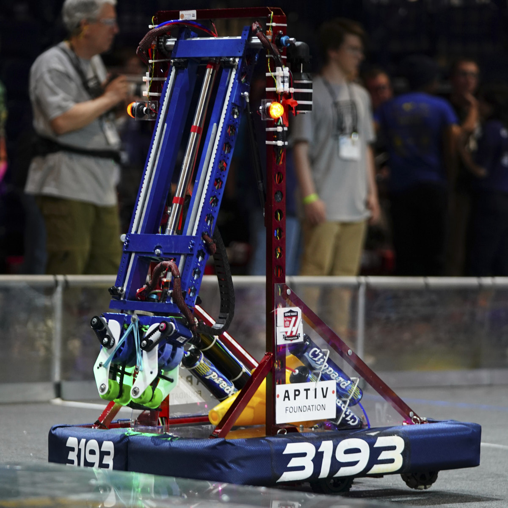
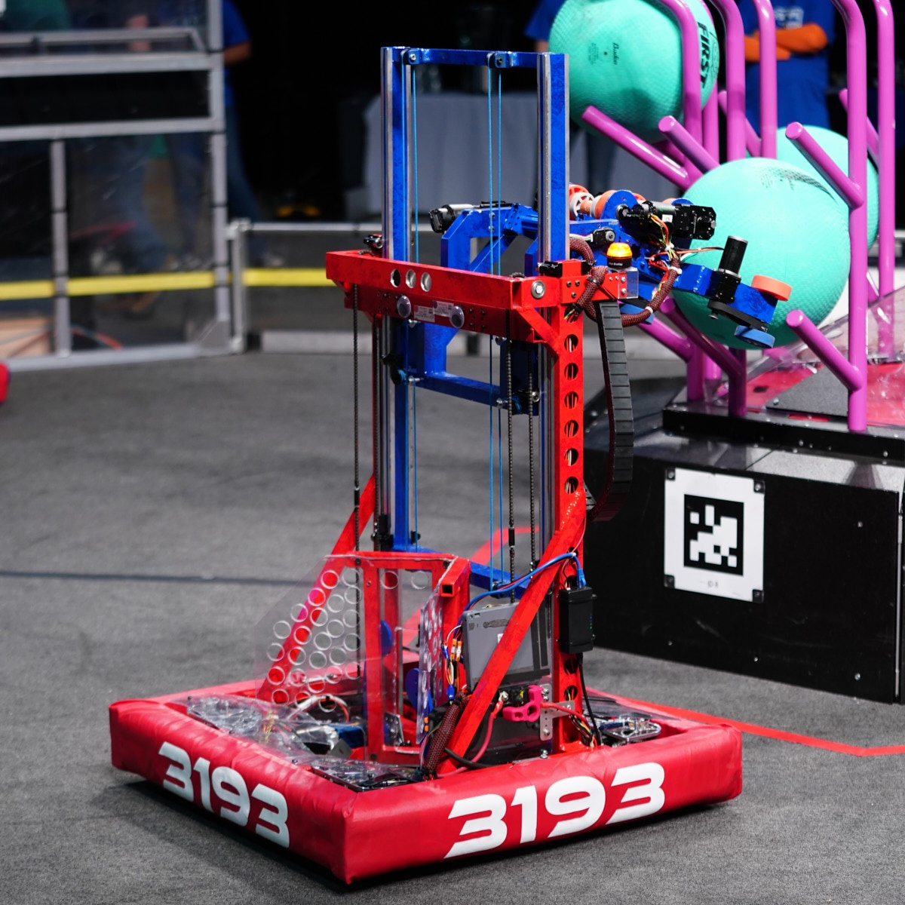

CAD & Drawings
Siemens NX, SolidWorks, OnShape, AutoCAD, Technical drawings, GD&T, Mechanical assemblies.
Mechanical Engineering | CAD | Additive Manufacturing | Robotics
Mechanical engineering portfolio highlighting significant projects and experience focused on practical design, rapid prototypes, manufacturing support, robotics, CAD, and electromechanical systems.
Technical Skills
These areas map directly to the projects below, as well as the mechanical design, manufacturing, robotics, and product-development roles I am targeting.
Siemens NX, SolidWorks, OnShape, AutoCAD, Technical drawings, GD&T, Mechanical assemblies.
DFAM, DFM, Rapid prototyping, 3D Printing, Fixtures, Composites, Composite layups.
FIRST Robotics leadership, Robot integration, Electronics, Panel wiring, Automation, Closed-loop feedback, PID, Field repairs.
C, Java, Python, MATLAB.
Selected Work
Three selected projects featured in this portfolio. More projects, photos, CAD exports, and test results are added as they are completed!

Robotics | Mechanical Design | Manufacturing
Designed a competition combat robot around a strict 30 pound limit, balancing durability, manufacturability, and drivetrain performance.

Additive Manufacturing | Product Design
Created an elastic-band-powered blaster with a CAD-modeled assembly and over 93% additively manufactured components.

Additive Manufacturing | Electronics
Designed a Magic: The Gathering card box inspired by BMO, combining a printed enclosure with battery power, charging, ESP32 control, buttons, and perfboard electronics.
NHRL Combat Robot | YSU Robotics Club | Dec 2025 - Apr 2026
A mechanical design project centered on packaging, durability, weight management, and the performance tradeoffs required for a competition robot.



3D Printed NERF Blaster | Jan 2025
A rapid-prototyping project focused on CAD assembly modeling, motion checks, tolerance iteration, and fast validation through 3D printed parts.
3D Printed BMO MTG Card Box | Jun 2025
A playful enclosure project that blends 3D printed product design with embedded electronics packaging, controls, charging, and hand-built perfboard wiring.

Experience
Internships and robotics roles that support the project work shown above.
May 2025 - May 2026
Worked on advanced manufacturing solutions using 3D printing, scanning, machining, and rheology while supporting production with fixtures, quality procedures, panel wiring, and technical reporting.
Jun 2024 - May 2025
Designed four interactive STEM "Career Carts" and supported hands-on engineering activities for students through field trips, summer camps, and guided design challenges.
Dec 2019 - Current
Designed robot subsystems, led programming work, integrated mechanical and control systems, diagnosed competition failures, and mentored students building precision mechanisms.


Contact
I am looking for mechanical engineering opportunities where I can contribute to design, manufacturing, robotics, prototyping, and hands-on engineering work.